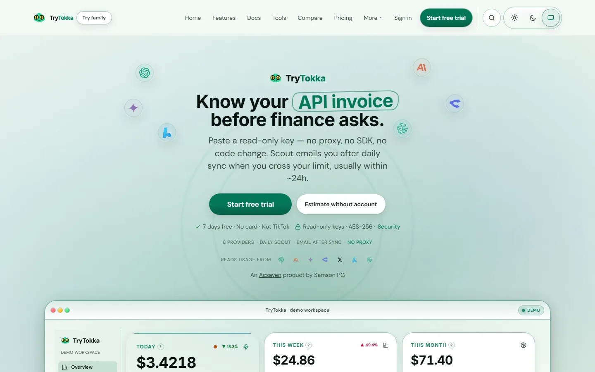
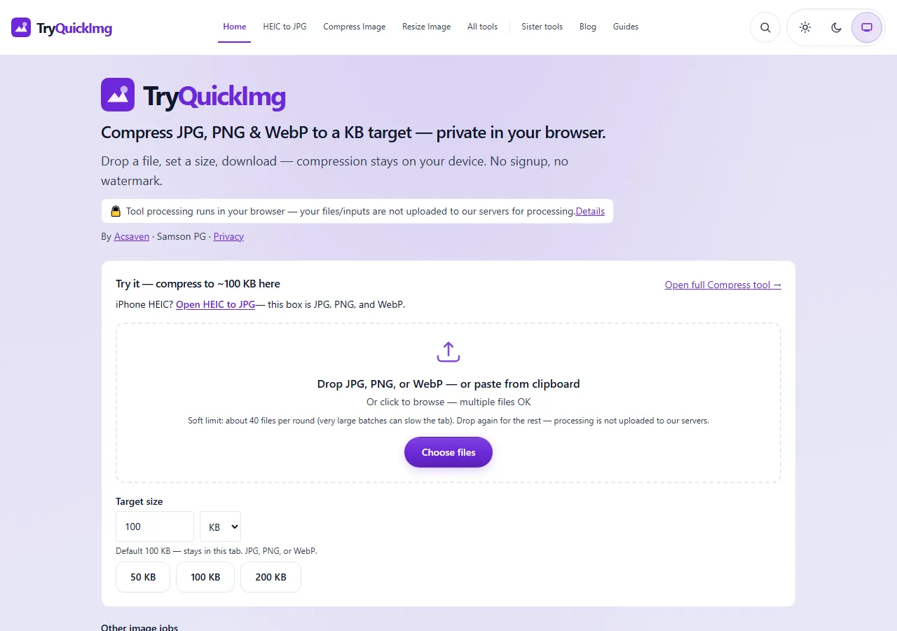
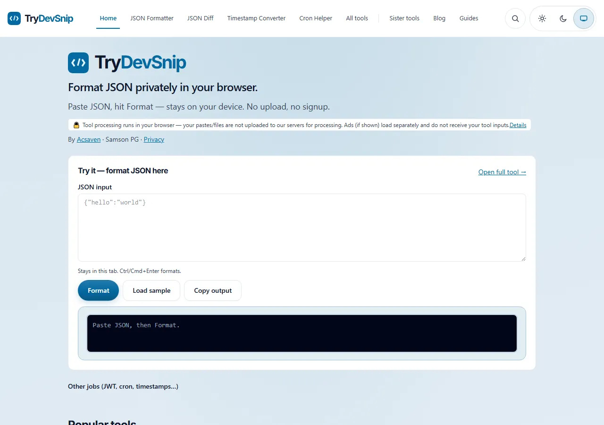
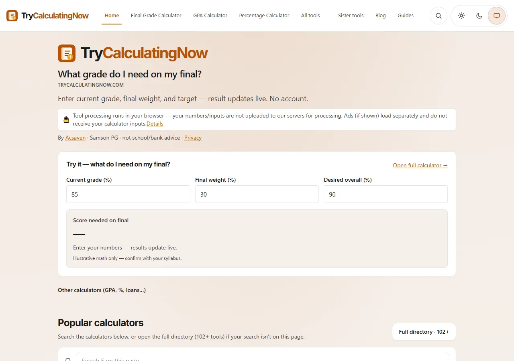
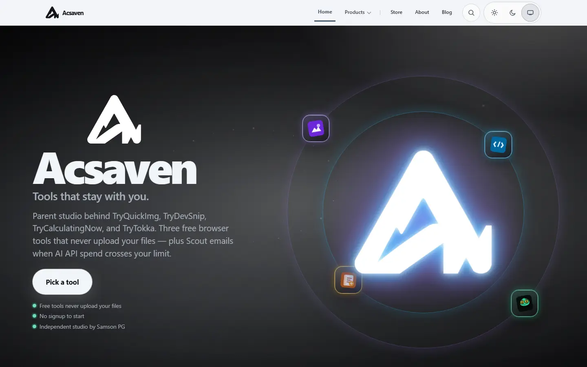
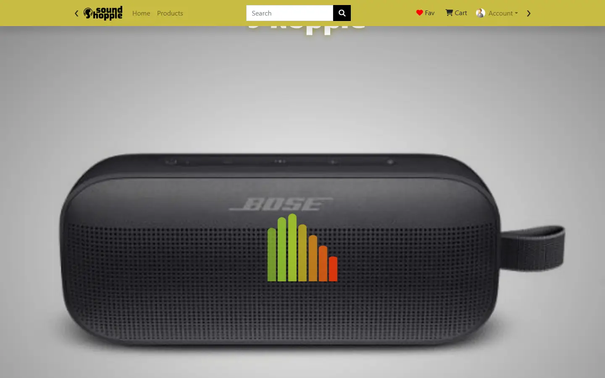
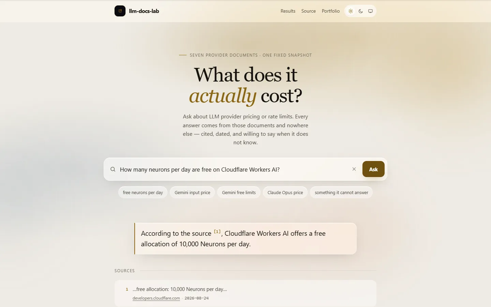

Product homepage demos
Exact offline captures when a live domain is blocked. Open a card — icons, images, and CSS ship in this folder. One entry, llm-docs-lab, is a results page rather than a homepage capture: its demo needs a live backend, so the measurements are what survives instead.

TryTokka
AI spend dashboard offline when trytokka.com is blocked

TryQuickImg
Compress / convert / resize UI without the live CDN

TryDevSnip
JSON, JWT, cron tools as a self-contained homepage

TryCalculatingNow
Calculator suite landing when the domain won’t load

Acsaven
Studio homepage capture — parent brand of the Try family

SoundShoppie
Exact 2023 ecommerce demo landing from the repo

llm-docs-lab
Measured results — retrieval, model comparison and prompt-injection scores

20X
Staffing CRM homepage snapshot for offline review
© 2026 Samson P G · Static · No tracking